感謝您對「自由軟體鑄造場」的支持與愛護，十多年來「自由軟體鑄造場」受中央研究院支持，並在資訊科學研究所以及資訊科技創新研究中心執行，現已完成階段性的任務。 本網站預計持續維運至 2021年底，網站內容基本上不會再更動。
也紀念我們永遠的朋友 李士傑先生（Shih-Chieh Ilya Li）。
也紀念我們永遠的朋友 李士傑先生（Shih-Chieh Ilya Li）。
讓 Android 手機告訴你眼前顏色的名字
建立日期 2011-04-08 16:12 最近更新在 2011-04-12 11:05
不知道各位讀者是不是已經到過台北花博？當你身處色彩絢麗的花海時，你可知道眼前這一片花海究竟有幾種顏色？紅、橙、黃、綠、藍、靛、紫？當然，能夠形容色彩的名詞絕對不止「彩虹七色」那麼少。不過，對於從事創作行業的人（包括插畫師、攝影師、設計師甚至作家）來說，如何以最精確的名詞將眼前的色彩向第三者形容，是很重要的！透過 Android Market 就可以找到一個名為 Coloureyes 的軟體，這個軟體能夠利用 Android 手機的鏡頭，擷取鏡頭前影像當中某一點色彩，並且顯示最符合這一點色彩的名詞。留意這個軟體的名稱是「Coloureyes」，採用英式拼法。此外，這個軟體所提供的都是色彩的英文名，同時也提供色彩的 RGB 值或 CMYK 值，對於從事創作行業的華文使用者來說，能夠很方便的與輸出廠商溝通自己所希望採用的顏色。軟體名稱：Coloureyes
最新版本：0.1
軟體授權：GNU General Public License (GPLv3)
系統支援：Android
官方網站：https://coloureyes.sourceforge.net/
使用者可以透過 Android Market 或 Coloureyes 的官方網站免費下載這個軟體。若透過 Coloureyes 的官方網站下載的軟體是 APK 檔案，以「.apk」為副檔名，利用 Android 手機中的檔案總管開啟 APK 檔案，便可選擇將軟體安裝至 Android 手機中。不過要注意的是，下載此檔案前，使用者要確定 Android 手機位於【設定】裡的【應用程式】介面，其中「未知的來源」的核取方塊已勾選。首次執行 Coloureyes 軟體時，使用者會先看到軟體的使用說明，然後便會見到如下圖的主畫面。
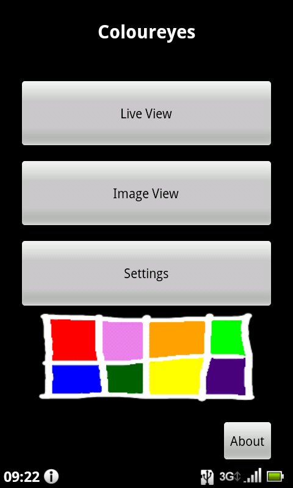
▲ 圖1
Live View 模式
軟體主要提供兩種操作方式：〔Live View〕及〔Image View〕。使用者若點選〔Live View〕，軟體便會即時啟動手機的鏡頭，使用者可透過以下畫面看到來自手機鏡頭的即時影像。
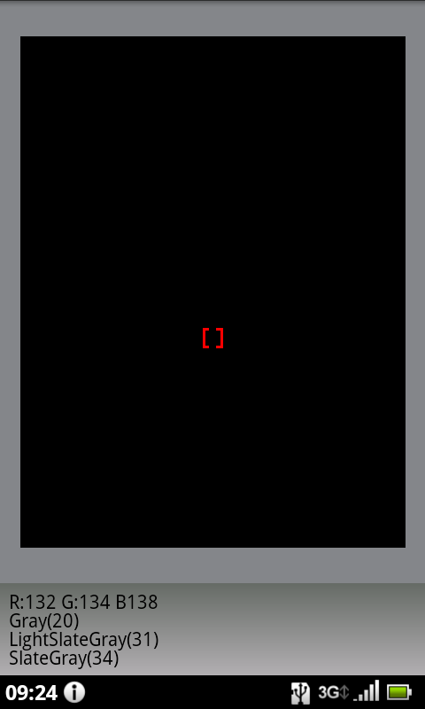
▲ 圖2
影像畫面中央有一個紅色的小框框，軟體會讀取小框框中的色彩，並且在畫面下方顯示這個色彩的英文名稱。軟體亦會顯示這個色彩的 RGB 或 CMYK 值，依使用者所選擇的設定而異。另外，留意軟體中色彩名稱的末端的數字，這個數字顯示即時影像的實際色彩與英文名稱所形容的色彩之間的差異程度。數值愈小，代表即時影像中的實際色彩愈符合英文名稱所形容的色彩。
使用者可利用 Coloureyes 軟體的〔Live View〕模式，即時讀取眼前物件的色彩，這樣便可得知較適合形容這種色彩的名字。當然，這種模式有一個弱點，那就是手機的鏡頭很容易受到環境色溫的影響，導致手機鏡頭錯誤感應物件的色彩。因此，這個軟體也提供另一種操作模式，那就是〔Image View〕。
Image View 模式
使用者若透過軟體的主畫面點選〔Image View〕，軟體便會讓使用者選擇讀取已儲存於手機裡的相片檔案，然後使用者便可透過選擇相片中的某一部分，以得知該部分的色彩名稱。
選擇載入相片後，使用者便會看到如下圖的操作介面，已載入相片的中央也會出現一個紅色小框框。軟體會讀取小框框中的色彩，並且在畫面下方顯示這個色彩的英文名稱，做法跟〔Live View〕模式頗相似。
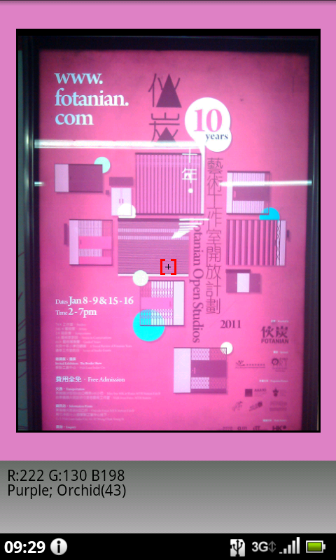
▲ 圖3
不過，透過〔Live View〕模式，使用者可用手指在手機屏幕上點著不放，直至畫面出現「Zoom Mode」字樣，使用者便可將手指向屏幕上方或下方移動，來將相片畫面「放大」或「縮小」。
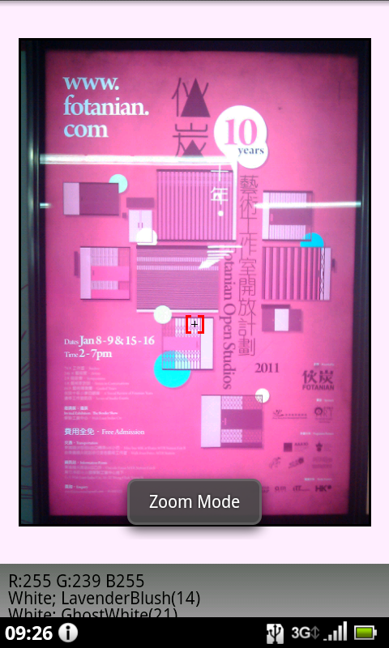
▲ 圖4
然後，使用者放開原本點著屏幕的手指，手指只要在屏幕上移動，畫面便會出現「Pan Mode」字樣，使用者便可將相片畫面移動，至所希望讀取相片中的色彩進入紅色小框框內。
使用者亦可選擇直接移動紅色小框框。方法是先用手指在小框框上方點一下，再用手指按著小框框，便可將它拖曳到影像中的其他位置。
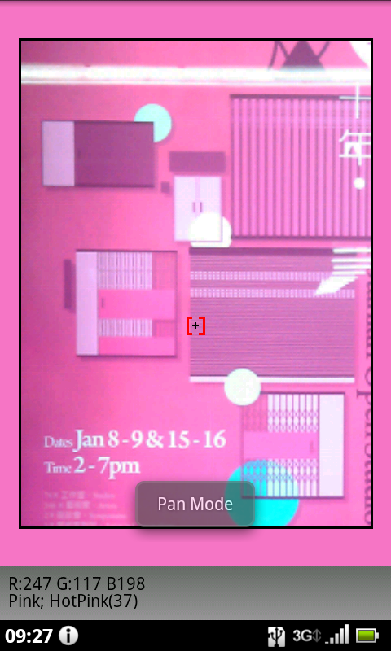
▲ 圖5
軟體設定
這個軟體也提供不少設定選項以方便使用者依照個人不同的使用習慣做適度的調整。透過軟體的主畫面點選〔Settings〕便可進入以下的設定介面。
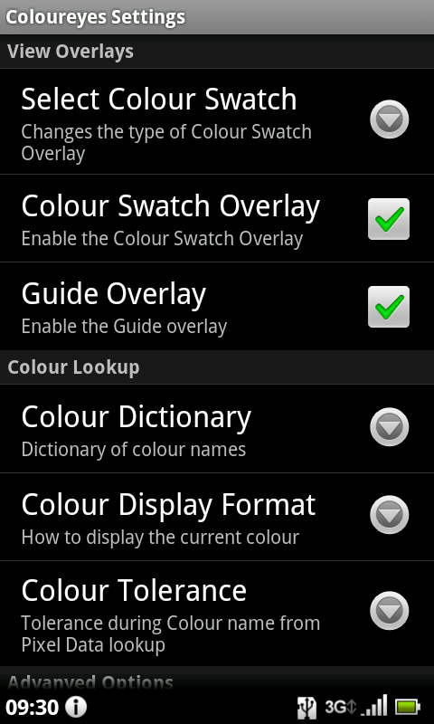
▲ 圖6
其中【Colour Lookup】設定區當中有一個名為〔Colour Dictionary〕的選項，可讓使用者選擇 Coloureyes 軟體用來顯示色彩名稱的字典來源。若將〔Colour Dictionary〕設定為〔Rainbow〕，在讀取色彩時，軟體會拋出彩虹七色的名字。不過，在一般的情況下，還是保留這個設定為〔X11〕比較好，因為〔X11〕的色彩詞彙明顯較為豐富。
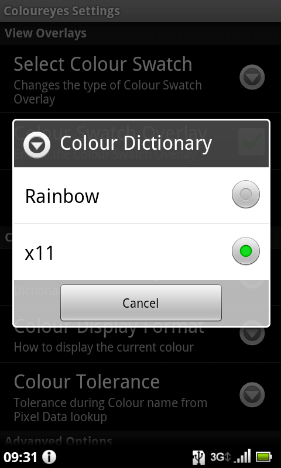
▲ 圖7
〔Colour Display Format〕則可讓使用者設定軟體讀取色彩時，所顯示的是色彩的 RGB 值或 CMYK 值。對於從事出版業的設計及美術人員來說，色彩的 CMYK 值比較有參考的價值。
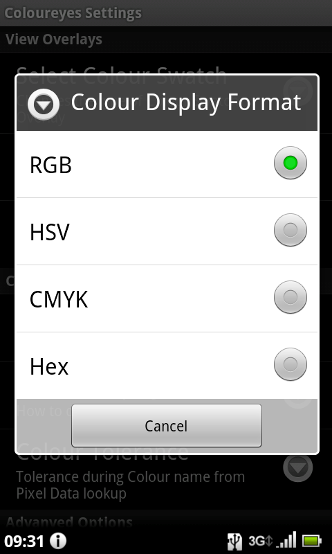
▲ 圖8
此外，Coloureyes 軟體亦提供一些進階的設定選項，位於軟體設定介面的下方，包括 Colour Selection、Size of Image Selection、Avg Recent Samples。
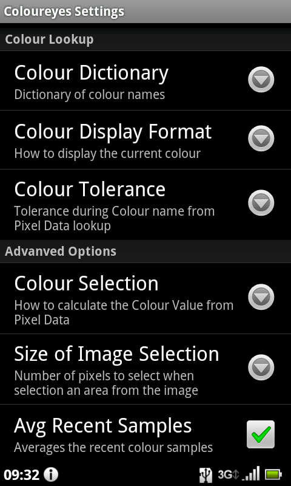
▲ 圖9
其中，〔Colour Selection〕選項能讓使用者設定軟體讀取色彩的紅色小框框的大小範圍。若選擇〔Single Pixel〕，軟體便會傳回紅色小框框中單一像素的色彩名稱。可是，倘若使用者想讀取的物件，其色彩並非太平均的話（例如油畫），建議選擇〔Average of Surrounding Pixels〕，軟體便會將紅色小框框周邊的像素一起計算在內，從而得出較符合的色彩名字。
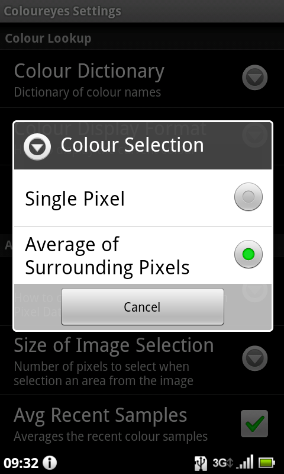
▲ 圖10
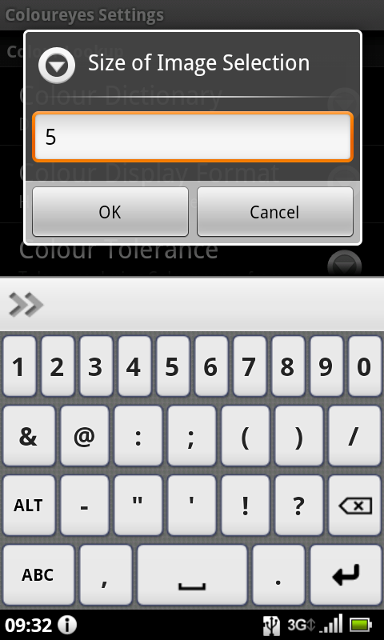
▲ 圖11 使用者亦可因應自身需要，透過〔Size of Image Selection〕，直接更改紅色小框框的大小。
專欄總覽


自由軟體鑄造場 製作 最佳瀏覽狀態：IE7或Firefox2.0以上 (建議使用Firefox) ‧ 解析度1024*768
E-Mail：contact@openfoundry.org Address：台北市南港區研究院路2段128號 中央研究院資訊科學研究所 . 隱私權條款. 使用條款
E-Mail：contact@openfoundry.org Address：台北市南港區研究院路2段128號 中央研究院資訊科學研究所 . 隱私權條款. 使用條款